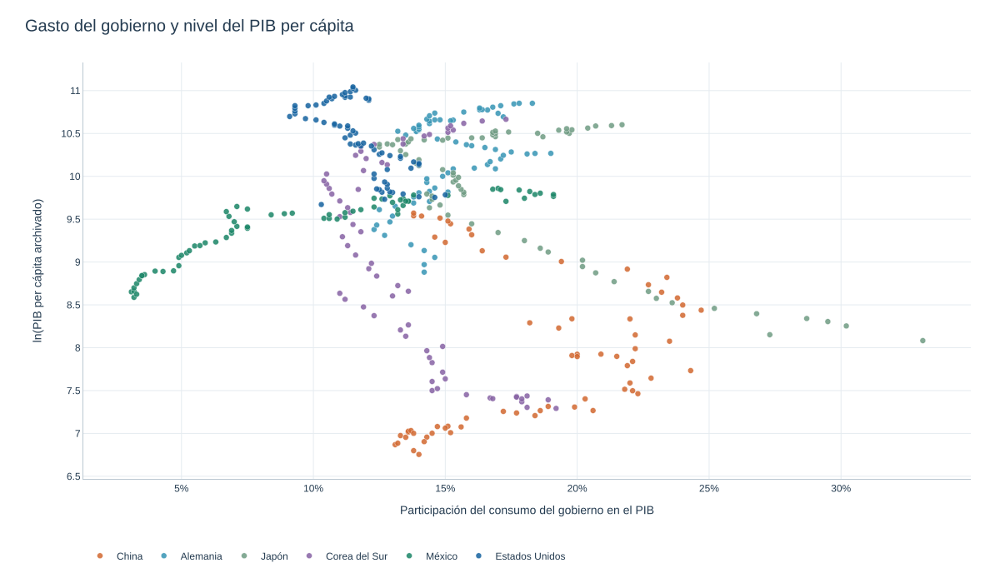
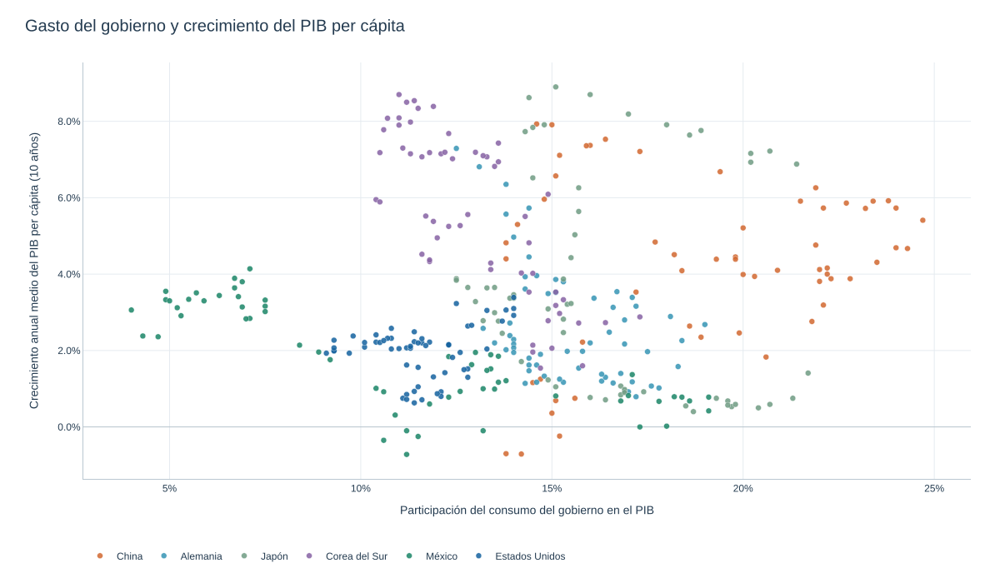

Crecimiento Económico. Política Fiscal y Crecimiento
Gobierno y nivel del PIB per cápita
La gráfica compara la participación del consumo del gobierno en el PIB con el nivel logarítmico del PIB per cápita en seis países. El eje horizontal no es una tasa impositiva.
Las asociaciones descriptivas de esta gráfica no identifican efectos causales.

La gráfica compara la participación del consumo del gobierno en el PIB con el crecimiento anual medio del PIB per cápita en ventanas de 10 años, para seis países.
El archivo de dispersión no conserva el año de cada punto; no se atribuye una fecha a las observaciones ni un efecto causal a la participación del gobierno.

Saez, Slemrod y Giertz (2009) analizan la tendencia de los impuestos marginales al top 1% de Estados Unidos.
La gráfica muestra que esta se ha reducido desde la década de 1980 mientras que la proporción del ingreso recibida por el 1% de mayores ingresos ha aumentado.

Impuestos y crecimiento
El mismo análisis se ve en los datos de impuestos de la Reserva Federal de Estados Unidos.
El patrón es que esta tasa marginal máxima disminuye con el tiempo, con algunas oscilaciones, tomando como máximo el 90% en la década de 1950 y el mínimo de 30% en 1990.
Gale y Samwick analizan el efecto de dos tipos de cambios en los impuestos al ingreso: cambios a las tasas, y reformas que aumentan la base tributaria y reducen las tasas de impuestos.
La evidencia histórica de Estados Unidos muestra grandes cambios en los impuestos con prácticamente ningún cambio observable en las tasas de crecimiento.

- La gráfica describe el crecimiento del PIB y del empleo alrededor de 2003. Comparar sus trayectorias no permite aislar el efecto causal del recorte fiscal frente a otros cambios de la economía.

- Yagan (2015) compara corporaciones C, afectadas por el recorte de 2003 al impuesto sobre dividendos, con corporaciones S, cuyo ingreso se atribuye fiscalmente a sus accionistas. La diferencia relevante es el tratamiento tributario. Estima un efecto nulo sobre inversión y remuneración de empleados para la muestra y el periodo estudiados.

Ufuk Akcigit, John Grigsby, Tom Nicholas y Stefanie Stantcheva examinaron el efecto de los impuestos corporativos y personales sobre la innovación en Estados Unidos. Descubrieron que existen efectos significativos de las tasas impositivas (cambios en el top 10) sobre la ubicación y la cantidad de actividad innovadora, medida por patentes, en todos los Estados.
Las corporaciones, en particular, parecen mover su actividad innovadora de un estado a otro en respuesta a las tasas impositivas. Los efectos son más débiles cuando hay efectos de aglomeración en la innovación

Impuestos y oferta laboral
Una reducción del impuesto al ingreso puede afectar la oferta laboral mediante efectos de sustitución e ingreso que operan en direcciones opuestas. La respuesta neta debe analizarse, en lugar de suponerse positiva.
Al aplicar el recorte impositivo, el top 1% aumenta sus porcentajes de ingreso. Sin embargo, el top 9% siguiente no modifica sus porcentajes de ingreso ni en los aumentos ni en los recortes impositivos.

- Zidar (2015, NBER WP 21035) encuentra que la relación positiva entre recortes fiscales y crecimiento del empleo en Estados Unidos se concentra en los grupos de menores ingresos; el efecto estimado para el 10% superior es pequeño. Se consideran dos mecanismos posibles:
Las respuestas de oferta laboral pueden diferir por nivel de ingreso y por el margen de participación u horas trabajadas.
Una mayor propensión a consumir puede aumentar el efecto de demanda de un recorte. El resultado depende también de su financiación y del contexto macroeconómico.

- Si lo que se busca es impulsar la economía con recortes a los impuestos, es más probable que esto se de si los recortes se hacen a las personas de medios y bajos ingresos.